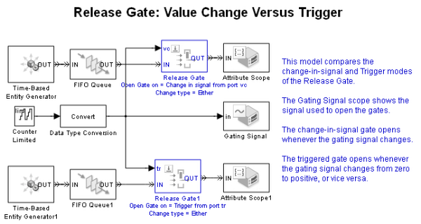

Release Gate: Value Change Versus Trigger
Contents
Description
This model compares the change-in-signal and Trigger modes of the Release Gate block. In this model, the Gating Signal scope shows the signal used to open the gates. The change-in-signal gate opens whenever the gating signal changes. The triggered gate opens whenever the gating signal changes from zero to positive, or vice versa.
